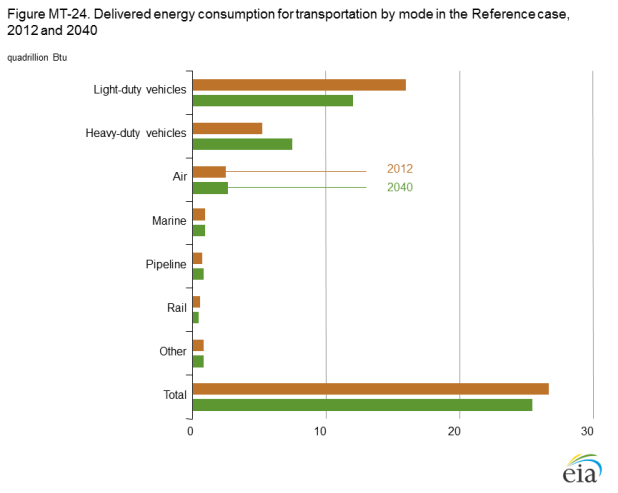

{kind=link}
{kind=link}
Annual Energy Outlook 2014
Release Date: May 7, 2014 | Next Release Date: March 2015 | See schedule | full report
Market Trends: Transportation sector energy demand
Transportation sector energy consumption declines in the Reference case
Transportation sector energy consumption declines from 26.7 quadrillion Btu in 2012 to 25.5 quadrillion Btu in 2040 in the AEO2014 Reference case (Figure MT-24), differing markedly from the longer historic trend. Transportation energy consumption grew by an average of 1.3%/year from 1973 to 2007, when it totaled 29.1 quadrillion Btu [3]. The decline in transportation energy demand is the result of significantly less energy use by light-duty vehicles (LDVs), along with a small decline in energy use by rail, which together more than offset increased energy use by heavy-duty vehicles (HDVs), aircraft, marine vessels, and pipelines.

figure data
LDV energy demand falls sharply, from 16.0 quadrillion Btu in
2012 to 12.1 quadrillion Btu in 2040, as the result of higher fuel
economy that more than offsets increases in LDV travel. Even
with new standards for HDV fuel efficiency and greenhouse gas
emissions starting in 2014, energy use by HDVs (including tractor
trailers, buses, vocational vehicles, and heavy-duty pickup
trucks and vans) increases the fastest among the transportation
modes, from 5.3 quadrillion Btu in 2012 to 7.5 quadrillion Btu in
2040, as a result of increased demand for travel as economic
output grows.
Aircraft energy consumption increases modestly, from 2.5 quadrillion Btu in 2012 to 2.7 quadrillion Btu in 2040, with growth in personal air travel mostly offset by gains in aircraft fuel efficiency. Energy consumption by marine vessels grows as increased international trade boosts demand for shipping and rising incomes increase demand for recreational boating. Pipeline energy use is tempered as increasing volumes of natural gas are produced closer to end-use markets, and energy consumption for rail travel declines slightly as the efficiency of rail improves more rapidly than travel demand increases.
CAFE and greenhouse gas emissions standards boost light-duty vehicle fuel economy
The 1978 introduction of corporate average fuel economy (CAFE) standards for LDVs increased the average fuel economy of these vehicles from 19.9 miles per gallon (mpg) in 1978 to 26.2 mpg in 1987. Despite technology improvements, however, as sales of light trucks increased from 17% of new LDV sales in 1980 to 53% in 2004 [4], fuel economy fell below 26 mpg in 1989 and did not rise above that level until 2007. From 2008 through 2012, LDV average fuel economy rose steadily from 27.1 mpg to 32.7 mpg, as a result of more stringent CAFE standards for light-duty trucks starting in model year 2008 and for passenger cars starting in model year 2011; CAFE and greenhouse gas (GHG) emissions standards for passenger cars and lightduty trucks starting in model year 2012; rising fuel prices; and a reduction in the sales share of light trucks.
The National Highway Traffic Safety Administration (NHTSA) and the U.S. Environmental Protection Agency (EPA) have jointly issued new GHG emissions and CAFE standards for model years 2012 through 2025 [5, 6], which are included in AEO2014. As a result, the fuel economy of new LDVs, measured in terms of their compliance values in CAFE testing [7], rises from 32.7 mpg in 2012 to 47.2 mpg in 2025 (Figure MT-25). The GHG emissions and CAFE standards are held roughly constant after 2025 in the Reference case, but fuel economy continues to rise, to 48.2 mpg in 2040, as new fuel-saving technologies are adopted. In 2040, passenger car fuel economy averages 55.6 mpg, and light-duty truck fuel economy averages 40.9 mpg.
Miles traveled per licensed driver remains below its historic high through 2040
Personal vehicle travel demand, measured as annual vehicle
miles traveled (VMT) per licensed driver, declined from its
historic high of 12,900 miles in 2007 to about 12,500 miles in
2012. In the AEO2014 Reference case, personal vehicle travel
continues declining to 12,200 miles in 2020 before increasing
to 12,800 miles in 2040—still below the 2007 level (Figure
MT-26). Although motor gasoline prices, personal income, and
vehicle fuel efficiency continue to influence personal vehicle
travel, the major factors in the decline from 2013 through 2025
are changes in travel patterns by driver age and gender groups
and changes in employment rates.
The number of licensed drivers grows by an average of 0.8%/year from 2012 to 2040, but declines in personal vehicle travel
demand for some age groups cause an overall decline in VMT
per licensed driver. The employment rate of the licensed driver
population (the employed, nonfarm population ages 16 and
over), which fell by 4 percentage points during the 2007-09
recession, does not rebound to pre-recession levels before
2040, tempering the projected growth in personal travel. Total
light-duty VMT increase in the Reference case to 3.4 trillion in
2040—a 29% increase from 2012—as a result of 26% overall
growth in the number of licensed drivers, from 213 million in
2012 to 269 million in 2040.
Although vehicle sales also grow through 2040, the number of
vehicles per licensed driver drops from 1.12 in 2007 to 1.02 in
2040, limiting the availability of vehicles for travel. Motor gasoline
prices fall from 2012 levels and do not exceed that level until
2035, while real personal disposable income per licensed driver
increases by 55% through 2040. The changes in travel behavior
and demographics more than offset the boost to personal travel
provided by income growth and lower motor gasoline prices.
Sales of vehicles using nongasoline technologies grow by nearly 400 percent from 2012 to 2040
Light-duty vehicles (LDVs) that use diesel, alternative-fuel,
hybrid-electric, or all-electric systems play a significant role in
meeting more stringent GHG emissions and corporate average
fuel economy (CAFE) standards in the AEO2014 Reference
case, with sales increasing from 18% of all new LDV sales in
2012 to 55% in 2040. Micro hybrid vehicles, defined here as
conventional gasoline vehicles with micro hybrid systems that
manage engine operation at idle, represent 33% of new LDV
sales in 2040 (Figure MT-27). Flex-fuel vehicles (FFVs), which
can use blends of up to 85% ethanol, represent about 11% of all
new LDV sales in 2040. Current incentives for manufacturers
selling FFVs, which are available in the form of fuel economy
credits earned for CAFE compliance, expire at the end of 2019.
As a result, the FFV share of LDV sales rises through 2019 and
then remains flat through the rest of the projection.
Sales of hybrid electric and all-electric vehicles that use stored electric energy for motive power grow substantially in the Reference case. Gasoline- and diesel-electric hybrid vehicles account for 5% of total LDV sales in 2040. Plug-in hybrid and all-electric vehicles account for 2% of total LDV sales and 3% of total sales of vehicles using diesel, alternative-fuel, hybrid, or all-electric systems.
The diesel vehicle share of total LDV sales remains roughly constant from 2012 to 2040 in the Reference case. Light-duty gaseous and fuel cell vehicles account for less than 1% of new vehicle sales because of limited fueling infrastructure and the high incremental costs of the vehicles.
Natural gas use for transportation fuel grows but still makes up a modest share of total use
The use of compressed natural gas (CNG) and liquefied natural
gas (LNG) in LDVs, HDVs, locomotives, buses, and marine
vessels grows from 43 trillion Btu in 2012 to 863 trillion Btu in
2040 in the Reference case (Figure MT-28). Still, CNG and LNG
account for only 3% of total energy consumption in the transportation
sector in 2040, similar to the amount of natural gas
consumed in pipeline transport.
Medium-duty and heavy-duty vehicles—including tractor trailers,
vocational vehicles, pickups, and vans with a gross vehicle
weight rating (GVWR) of 10,001 pounds or more—become the
largest consumers of CNG and LNG, increasing from 11 trillion
Btu in 2012 to 613 trillion Btu in 2040 in the Reference case. The
increase is spurred by relatively low natural gas prices. Initially,
natural gas is consumed primarily by medium-duty trucks using
CNG; but the vast majority of growth in natural gas consumption
is for heavy-duty trucks (primarily tractor trailers) using
LNG—a relatively high-mileage application in which the fuel
cost savings of LNG offset the significant incremental capital
cost of LNG vehicles.
LNG energy consumption by freight rail locomotives grows to 148 trillion Btu by 2040, when it accounts for 35% of total freight rail energy consumption, with fuel cost savings offsetting the incremental capital costs of LNG locomotives. CNG and LNG energy demand for buses grows from 13 trillion Btu in 2012 to 81 trillion Btu in 2040, primarily because of growth in CNG use for transit buses, which represents 28% of total energy consumption by buses in 2040. Use of CNG by LDVs and LNG by domestic marine vessels remains relatively minor, at 19.1 trillion Btu and 1.5 trillion Btu in 2040, or 2% and 0.2% of each mode's energy consumption, respectively.
Endnotes
- S.C. Davis, S.W. Diegel, and R.G. Boundy, Transportation Energy Databook: Edition 32, ORNL-6989 (Oak Ridge, TN: July 2013), Chapter 2, Table 2.1, "U.S. Consumption of Total Energy by End-Use Sector, 1973-2012."
- S.C. Davis, S.W. Diegel, and R.G. Boundy, Transportation Energy Databook: Edition 32, ORNL-6989 (Oak Ridge, TN: July 2013), Chapter 4, Table 4.6, "New Retail Sales of Trucks 10,000 Pounds GVWR and Less in the United States, 1970-2012."
- U.S. Environmental Protection Agency and National High way Traffic Safety Administration, "Light-Duty Vehicle Greenhouse Gas Emission Standards and Corporate Average Fuel Economy Standards; Final Rule," Federal Register, Vol. 75, No. 88 (Washington, DC: May 7, 2010), https://www.federalregister.gov/articles/2010/05/07/2010-8159/light-duty-vehicle-greenhousegas-emission-standards-and-corporate-average-fuel-economy-standards.
- U.S. Environmental Protection Agency and National Highway Traffic Safety Administration, "2017 and Later Model Year Light-Duty Vehicle Greenhouse Gas Emissions and Corporate Average Fuel Economy Standards; Final Rule," Federal Register, Vol. 77, No. 199 (Washington, DC: October 15, 2012), https://www.federalregister.gov/articles/2012/10/15/2012-21972/2017-andlater-model-year-light-duty-vehicle-greenhouse-gas-emissions-and-corporate-average-fuel.
- LDV fuel economy includes alternative-fuel vehicles and banked credits towards compliance.
In This Section
- Transportation sector energy consumption declines in the Reference case
- CAFE and greenhouse gas emissions standards boost light-duty vehicle fuel economy
- Miles traveled per licensed driver remains below its historic high through 2040
- Sales of vehicles using nongasoline technologies grow by nearly 400 percent from 2012 to 2040
- Natural gas use for transportation fuel grows but still makes up a modest share of total use